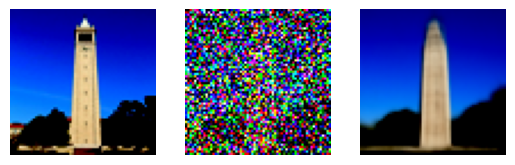
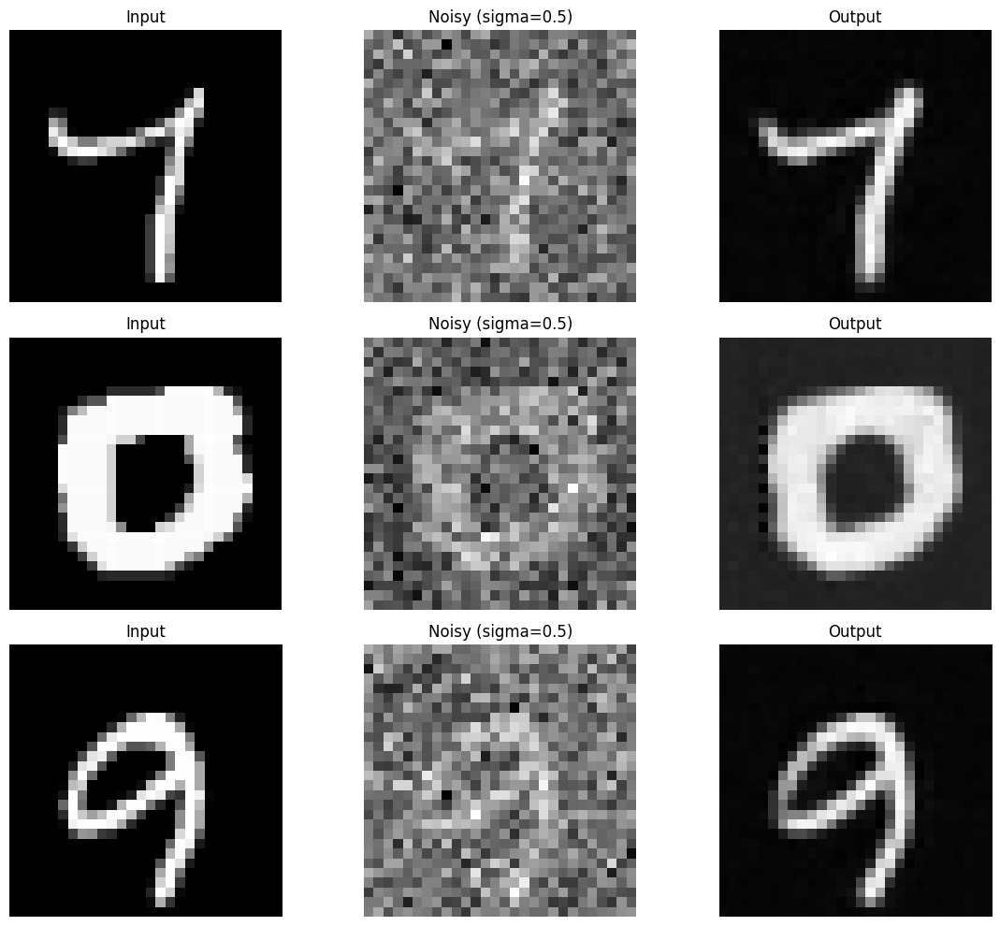

Project 5
Using diffusion models to generate images
Part A
For this project we were supposed to generate images by using diffusion models. The first part of the project was to run an already made model with three pre-written prompts. When I ran the code with seed 200 and 20 inference steps this was the output I got from the three prompts:
an oil painting of a snowy mountain village
a man wearing a hat
a rocket ship
As we see, the quality of the output is quite good. All the images relate to their prompt. With such limited and short prompts as given here, the model has a lot of freedom so it can generate a lot of different images satisfying the prompt. However, the model clearly focuses on what the prompt aims to capture which is good.
One issue that appears is artifacts. For example, we can see that in the image of the man wearing a hat, the man has something that seems to be the beggining of a second hat beneath his main one. Additionally, none of the images look particularly realistic where they all have a certain cartoonish look to them.
If we now try to run the same code with the same seed but with 50 inference steps, we get this result when we put the images side by side:
an oil painting of a snowy mountain village
same prompt but with 50 inference steps
a man wearing a hat
same prompt but with 50 inference steps
a rocket ship
same prompt but with 50 inference steps
As we see, the artifact of the man wearing a second hat is gone. That image also looks more realistic in general. The other images have been able to capture more details and look sharper overall now that we have increased the number of inference steps.
Implementing the Forward Process
To now implement my own forward process, I iteratively computed x and timestep t given the following formula:
I then took the image of the campanile and ran the forward process on it to see how it would evolve over time. The result was that it became more and more noisy as time went on.
Original image
Noise after 250 step
Noise after 500 steps
Noise after 750 steps
Classical Denoising
For the denoising i used the torchvision.transforms.functional.gaussian_blur function with a kernel of 3x3 to blur the image after each step. This made the image less noisy. However, as we see below, the results were not very good. Especially after 750 steps, the image is very blurry and it is hard to see what the original image was.
Noise after 250 step
Denoising after 250 steps
Noise after 500 steps
Denoising after 500 steps
Noise after 750 steps
Denoising after 750 steps
One Step Denoising
To implement one step denoising, I used the pre-trained UNet model and estimated the noise in the new noisy image, with the stage_1.unet. I could then remove the noise from the image to get a denoised image. Below are the results of the denoising after 250, 500, and 750 steps showing the original image, the noisy image, and the denoised image respectively.
Iterative Denoising
To implement iterative denoising, I used the UNet model as before, but now denoised the image bit by bit. I did this by going from timestep 690 and down with a stride of 30. Below is every fifth image in the process. As we see, the results are way better with this approach than denoising the image with one large step or by gaussian blurring.
Timestep 690

Timestep 540
Timestep 390
Timestep 240
Timestep 90
Final predicted image
One step denoising
Gaussian blur denoising

Original image
Diffusion Model Sampling
To make the diffusion model create a brand new image from scratch, I generated some random noise and used the iterative_denoise function from before. Doing this five times gave me the images below. They are not great quality, but they show the power of diffusion models to generate brand new images.
Generated image 1
Generated image 2
Generated image 3
Generated image 4
Generated image 5
Classifier Free Guidance
To tackle the issue with the image quality, we can use classifier-free guidance. This is done by estimating noise conditioned on a text prompt (εc), and an unconditional noise estimate (εu) and then use the following formula with gamma = 7.
ε = εu + γ (εc - εu)
With everything else in the iterative denoising staying the same, the results are way better. The images are now much clearer and the quality is way better. The model is not as diverse as before since it is now being more guided and directed towards a certain image but for our use case where we just want high quality images, this is a great way to do so. Here are the results.
Generated image 1
Generated image 2
Generated image 3
Generated image 4
Generated image 5
Image-to-image Translation
For this section, I used the iterative classifier-free guidance denoising to recreate the image of the campanile. I used the prompt "a high quality photo" and noise levels from 1 to 20. The results show that we get images closer and closer to the original image as the noise level increases.

Campanile from noise level 1
Campanile from noise level 3
Campanile from noise level 5
Campanile from noise level 7
Campanile from noise level 10
Campanile from noise level 20

Original image
Afterwards, I used the generative model to recreate an image of my dog Timmi. For lower start levels where the noise is closer to the random noise, the model generated random images that were not even related to dogs. For higher noise levels, however, the model started to generate images of dogs. I did the same for an image of Paddy, an Irish man, standing on a cliff and here the images were always depicting some kind of landscape, which may indicate that there are more picutres of landscapes in the training data than pictures of dogs. The same thing held for that image where the recreations with higher noise level where more similar to the originial image. These were the results I got.
Original image of Timmi
Original image of Paddy standing on a cliff
Timmi from noise level 1
Timmi from noise level 3
Timmi from noise level 5
Timmi from noise level 7

Timmi from noise level 10
Timmi from noise level 20
Paddy from noise level 1
Paddy from noise level 3

Paddy from noise level 5
Paddy from noise level 7
Paddy from noise level 10
Paddy from noise level 20
Editing Hand-Drawn and Web Images
Now, to edit hand-drawn and web images, I first drew a beatiful image of a guy on a field with an axe in front of a tree. In the beginning, we are getting more realistic images, but of more irrelevant things. As the noise level increases, the images start to look more like the original drawing and it looks more and more cartoonish. The same thing is observed with my other very impressive drawing of a plane soaring through the skies. Here are the results.
Field from noise level 1
Field from noise level 3
Field from noise level 5
Field from noise level 7
Field from noise level 10
Field from noise level 20
Original image
Plane from noise level 1
Plane from noise level 3
Plane from noise level 5
Plane from noise level 7
Plane from noise level 10
Plane from noise level 20
Original image
I then used the same process to generate images from a web image. For this I chose an image from my game Elementalist where the character is fighting a monster in a desert. As the noise level increases, the image looks more and more like a desert landscape with a monster in it. The results are below.
Elementalist from noise level 1
Elementalist from noise level 3
Elementalist from noise level 5
Elementalist from noise level 7
Elementalist from noise level 10
Elementalist from noise level 20
Original image
Inpainting
For the inpainting, I used the mask we were given. Then I applied noise to the entire image so that it could create a new image that would fill in the missing mask. After each iteration, I made sure that all other parts of the image stayed the same. Here are the images of the Campanile, the mask and the cut out part of the image.
Original image
Mask
Cutout
As we can see from the images below, the model is able to fill in the missing part of the image quite well. The generated part of the image fits the rest of the image and it looks realistic. Here are two inpaintings that ended up quite different.
Inpainting 1

Inpainting 2
For my own images, I here took an image of my friend jumping over a river. I wanted to see what the model wanted him to jump over so I cut out the river at the bottom and used the model to paint it. The result is him jumping over a woman laying on the ground.

Original image
Mask
Cutout
Inpainting
For my last image, I took a picture of myself looking at the ocean. I then cut out parts of the ocean and used the model to inpaint it. The result was that I was looking at an entirely different lake with no boats or bridges in it.

Original image
Mask
Cutout
Inpainting
Text-Conditioned Image-to-image Translation
For this task, I used the same denoising process as before, but now I used other prompts. For the campanile, I used "a rocket ship" as the prompt which made the model generate the images below at different noise levels.
Rocket from noise level 1
Rocket from noise level 3
Rocket from noise level 5
Rocket from noise level 7
Rocket from noise level 10
Rocket from noise level 20

Original image
Now doing the same thing for myself with the prompt "a man wearing a hat" I got the results below. We can see that it generates arbitrary images of men with hats at lower noise levels, but as the noise level increases, the images start to look more like a person sitting in my position with similar clothes on with a hat.
Hat from noise level 1
Hat from noise level 3
Hat from noise level 5
Hat from noise level 7
Hat from noise level 10
Hat from noise level 20
Original image
I then did the same thing for the image of my friend jumping over the river. Here I gave it the prompt "a photo of a hipster barista". However, since the image and the prompt are so different, the model has a hard time making a connection between the two, especially at lower noise levels. At higher noise levels, the model starts to generate images of a barista standing in the same position as my friend but up until that he is only transformed into a part of the background or not visible at all.
Barista from noise level 1
Barista from noise level 3
Barista from noise level 5
Barista from noise level 7
Barista from noise level 10
Barista from noise level 20
Original image
Visual Anagrams
Now to create a visual anagram, I used the UNet model twice. First, I used it to denoise the image and then I used it to denoise the image flipped on its head. By doing this, I could generate an image where you see one thing when the image is upside down and another thing when it is right side up. With the prompts "an oil painting of people around a campfire" and "an oil painting of an old man" I got the image below.
Right side up (campfire)
Upside down (old man)
Here is the same process for the prompts "a lithograph of waterfalls" and "a lithograph of a skull" and the prompts "a photo of the amalfi cost" and "a photo of a dog".
Right side up (waterfall)
Upside down (skull)
Right side up (Amalfi coast)
Upside down (dog)
Hybrid Images
To create hybrid images, I used a similar approach to the one in the last task, but instead of summing the denoised image and the flipped denoised image, I summed the denoised high frequency image with the denoised low frequency image. This way, the high frequency image would be visible when the image is viewed up close and the low frequency image would be visible when the image is viewed from a distance. I then used the prompts "a lithograph of waterfalls" and "a lithograph of a skull" to create an image of a skull that is visible when viewed from a distance and waterfalls that are visible when viewed up close.
Close up (waterfalls)
From a distance (skull)
Using the same prompt "a photo of a dog" and "a photo of the amalfi cost", we see that the coast is visible when the image is viewed close up and you see the dog if you see the image from a distance. I then used the prompts "an oil painting of a snowy mountain village" and "a rocket ship" to see a snowy mountain village when the image is viewed up close and a rocket ship when the image is viewed from a distance. The results are below.
Close up (Amalfi coast)
From a distance (dog)
Close up (mountain village)
From a distance (rocket)
Part B
Training a Single-Step Denoising UNet
Now it was time to build our own diffusion model from scratch. I started this by implementing these blocks:
(1) Conv is a convolutional layer that doesn't change the image
resolution, only the channel dimension.
(2) DownConv is a
convolutional layer that downsamples the tensor by 2.
(3) UpConv
is a convolutional layer that upsamples the tensor by 2.
(4)
Flatten is an average pooling layer that flattens a 7x7 tensor into a
1x1 tensor. 7 is the resulting height and width after the downsampling
operations.
(5) Unflatten is a convolutional layer that
unflattens/upsamples a 1x1 tensor into a 7x7 tensor.
(6) Concat
is a channel-wise concatenation between tensors with the same 2D
shape. This is simply torch.cat. D is the number of hidden channels
and is a hyperparameter that we will set ourselves.
(7)
ConvBlock, is similar to Conv but includes an additional Conv. Note
that it has the same input and output shape as (1) Conv.
(8)
DownBlock, is similar to DownConv but includes an additional
ConvBlock. Note that it has the same input and output shape as (2)
DownConv.
(9) UpBlock, is similar to UpConv but includes an
additional ConvBlock. Note that it has the same input and output shape
as (3) UpConv.
Afterwards, I put it all together to create an unconditional UNet according to this architecture:

Using the UNet to Train a Denoiser
To then train the model on MNIST, I first had to add noise to the images that the model would be able to learn from. Here I added noise of the following levels: [0.0, 0.2, 0.4, 0.5, 0.6, 0.8, 1.0]. To visualize the noise, I plotted 5 digits with different noise levels. The results are below.
I then trained the model for 5 epochs with a batch size of 256. I set the noise level to 0.5 and the number of hidden dimensions to 128. Using L2 loss (MSE) and Adam optimizer with a learning rate of 1e-4, I ended up getting a loss of only 0.0084 after the last epoch. Below I have plotted some inputs to the model, the noised image and the output that the model generated do denoise the image. I did this for both the first and last epoch and we can clearly see that the output of the model is more clear and similar to the input image after the last epoch.
Results After Epoch 1
Results After Epoch 5
Below is the loss plotted over the steps of the training. We can see that the loss is steadily decreasing and that the model is learning well.
When we have trained the model on noise level 0.5 we can then see how it performs when denoising images of other noise levels. Below I have plotted the input image at the noise levels from before [0.0, 0.2, 0.4, 0.5, 0.6, 0.8, 1.0] and the output that the model generated when denoising the image. We can see that the model is able to denoise the images with lower noise levels quite well. However, when the noise gets higher to 0.8 or 1.0, the model creates artifacts in the image and the number is not looking right.
Training a Diffusion Model
Now it was time to train a diffusion model. I started by implementing time conditioning to the UNet so that it could take in images at different noise levels and learn how to denoise them. I could then use the equations below to calculate the next time step iteratively where xt is the image at time t, z is noise, betas are a linear schedule between two intervals, alphas are 1 - betas and alpha-bars are cumulative product of alphas.
Doing this allowed us to learn the patterns in the data and recreate digits from noise, effectively drawing our own digits. Below I have plotted the training loss over the steps of the training as well as numbers generated after 5 and 20 epochs. We can see that the model is becoming better as the training progresses and that the numbers are becoming more clear and start to represent the actual digits.
Results After Epoch 5
Results After Epoch 20
For the next part I implemented a Class-Conditioned UNet where I conditioned the model on the class of the digit that I wanted to generate. I did this by adding 2 more fully connected blocks to the UNet with a one-hot encoded class label c as input. Additionally, I implemented a 10% dropout to make it work without being conditioned on the class c. Below is the loss plotted over the steps of the training across 20 epochs.
Having a class conditioned UNet, we could now sample from specific classes. Below are the samples from classes 0 to 9 after 5 and 20 epochs. We can see that the model is able to generate digits that represent the classes quite well even after 5 epochs because of the class conditioning, but it still gets less noisy and more clear after 20 epochs.